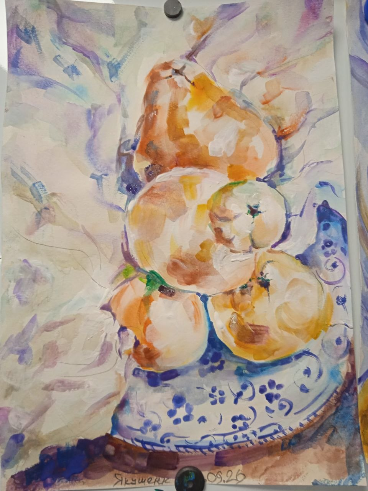
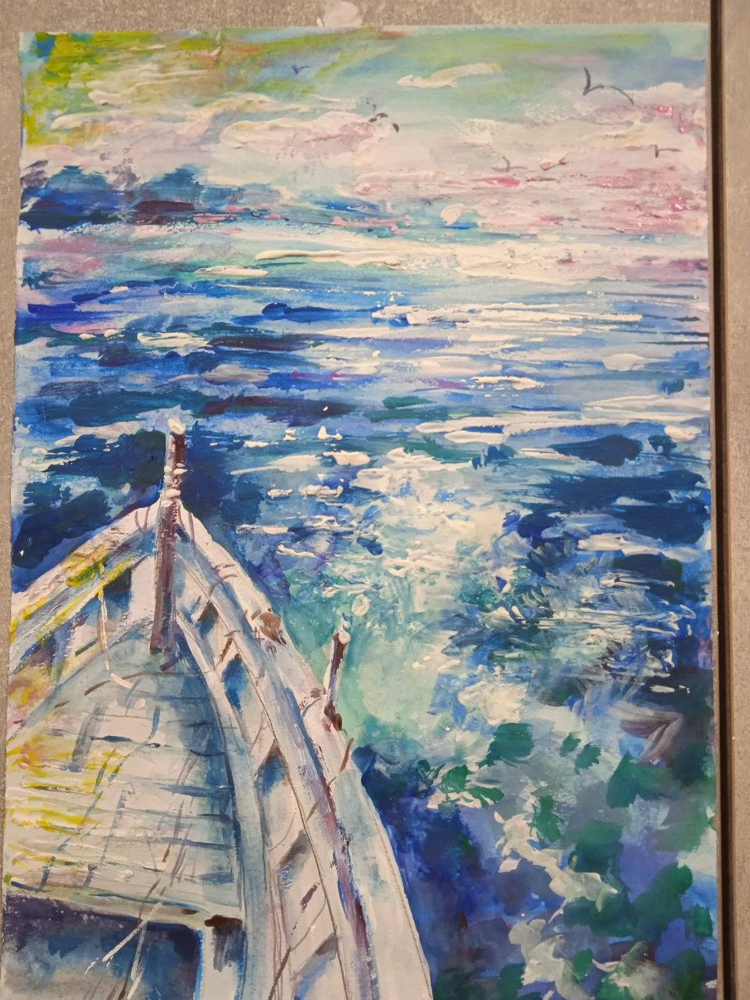
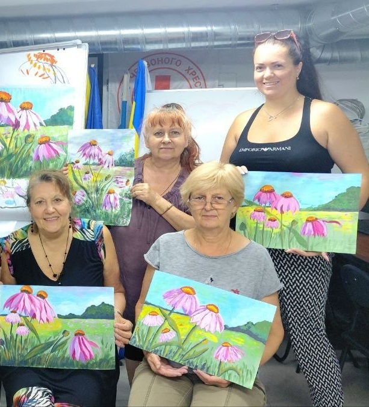
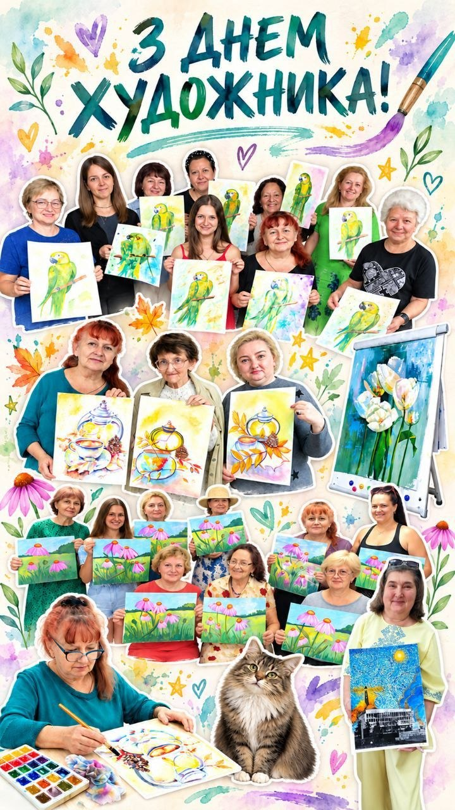

Художниця з Херсона
Світ,
побачений
серцем.
Малюю миті, які хочеться зберегти: красу природи, тепло зустрічей і тиху радість звичайного дня.
Зазирнути у мою галерею

Кожна робота — це частинка мого світуРада знайомству
У кожного кольору
є своя історія.
Я — Тетяна Якушенко, художниця з Херсона. У живописі мене надихає те, що поруч: квіти, рідні краєвиди, сезонні барви й маленькі миті, з яких складається життя.
Люблю спостерігати, як на білому аркуші поступово народжується настрій. Ділюся цим відчуттям у своїх картинах і на творчих зустрічах.
Мистецтво об’єднує ТетянаМої роботи
Кольори, що
говорять.
Квіти, натюрморти, улюблені персонажі та краєвиди — кожна картина має свій настрій.
Зустрічі та натхнення
Мистецтво,
яке об’єднує.
Творчість стає ще теплішою, коли нею ділишся. Зустрічі за малюванням, нові знайомства й роботи, створені разом, — особлива частина мого життя.
Давайте знайомитися

Замість прощання — до зустрічі
Нехай у вашому дні
буде трохи мистецтва.
Перегляньте мої картини або завітайте на творчу зустріч — буду рада розділити з вами натхнення.
Повернутися до галереї З теплом, Тетяна · Херсон